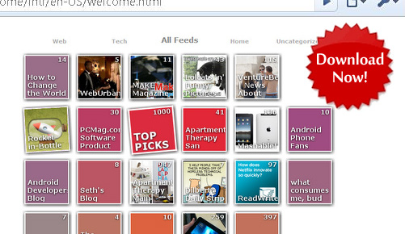

Thank you for using Wikipedia Companion
The Wikipedia Companion is a mini wiki browser with history, cache and search features. We hope it will make Wikipedia more enjoyable and useful!
In this version, clicking the language switch will change the current article to a second language. There is also an option to show today's featured article on startup.
Try other extensions that enhance Chrome!


FeedSquares is a whole new way to experience Google Reader on Chrome - fully synchronized with Google Reader, and gives lightweight listings of feed items with image previews.